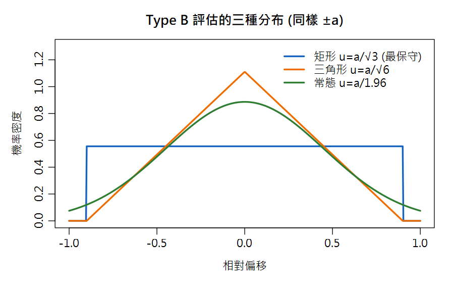
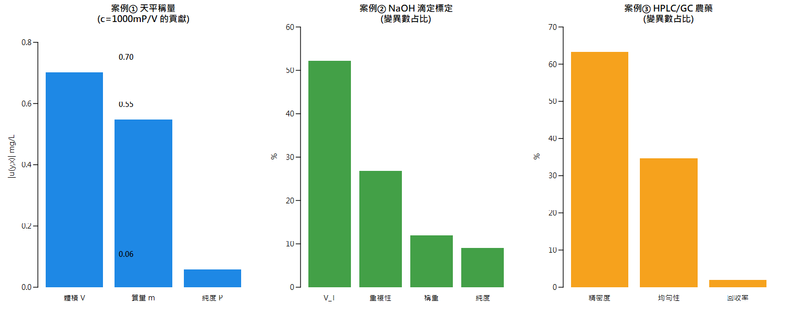

Part 2 量測不確定度（QUAM §7, §8.1, Appendix E.1）／第 7 章
量化不確定度：Type A / Type B 與分布轉換 Quantifying Components — plus 實戰案例① 分析天平稱量
天平說明書只寫「線性 ±0.2 mg」。這個「±」到底代表什麼機率？換算錯了，後面整套不確定度都會歪掉。
🔑 課前暖身
證書只寫「±0.2 mL」時，標準差該算多少？答案：看「極端值可不可信」，從三種形狀中選一種來換算。
本章後半用分析天平當主角，把這些換算套到真儀器上，完成第一個完整的不確定度預算。
本章新詞先認識：Type A＝用重複實驗算出來的；Type B＝用證書/規格換算出來的；矩形分布＝只知道範圍時最保守的假設；三角分布＝極端值罕見一點的假設。
名詞卡住了？回 Ch0 名詞圖鑑 查白話解釋與比喻。
本章新詞先認識：Type A＝用重複實驗算出來的；Type B＝用證書/規格換算出來的；矩形分布＝只知道範圍時最保守的假設；三角分布＝極端值罕見一點的假設。
名詞卡住了？回 Ch0 名詞圖鑑 查白話解釋與比喻。
學習目標
- 區分 Type A（統計）與 Type B（其他資訊）評估
- 會把「±a 界限」依矩形／三角形／常態分布換算成標準不確定度
- 完成實戰案例①：把天平稱量的三種來源換算、合成，並評估對最終濃度的貢獻
7.1 兩種評估類型
Type A 評估
由重複量測的統計得出：
u(x) = 觀測標準差 s
（結果為 n 次平均時用 s/\(\sqrt{n}\)）
例：同一樣品稱 6 次的 SD
由重複量測的統計得出：
u(x) = 觀測標準差 s
（結果為 n 次平均時用 s/\(\sqrt{n}\)）
例：同一樣品稱 6 次的 SD
Type B 評估
由既有資訊推得：校正證書、規格容許差、 文獻數據、儀器規格、專業判斷。
關鍵動作：把「±a」換算成等效標準差。
例：容量瓶證書 ±0.2 mL
由既有資訊推得：校正證書、規格容許差、 文獻數據、儀器規格、專業判斷。
關鍵動作：把「±a」換算成等效標準差。
例：容量瓶證書 ±0.2 mL
7.2 Type B 的分布轉換（QUAM Appendix E.1）

圖 7-1 同樣 ±a，三種假設分布換算出的 u 不同：矩形最保守
| 分布 | 換算公式 | 何時使用（QUAM §8.1） | 例：a=0.2 |
|---|---|---|---|
| 矩形 | u = a/\(\sqrt{3}\) ≈ 0.577a | 只知 ±a、無信賴水準、極端值可能出現 | 0.115 |
| 三角形 | u = a/\(\sqrt{6}\) ≈ 0.408a | 知 ±a，且中間值明顯較可能（極端罕見） | 0.082 |
| 常態 | u = a/1.96 ≈ 0.51a | ±a 明確是 95% 信賴區間 | 0.102 |
📖 QUAM 原例（§8.1.3–8.1.5）
同一支 10 mL A 級容量瓶 ±0.2 mL：矩形 → u=0.12 mL；若內部查核顯示極端值罕見
（三角形）→ u=0.08 mL。天平讀值 ±0.2 mg（95% 信賴）→ u = 0.2/1.96 = 0.1 mg。
選分布＝做工程判斷，必須在預算表中寫明理由。
# Type B 轉換函數
u_rect <- function(a) a / sqrt(3) # 矩形
u_tri <- function(a) a / sqrt(6) # 三角形
u_n95 <- function(a) a / qnorm(.975) # 常態(95% CI)
round(c(flask_rect = u_rect(0.2), flask_tri = u_tri(0.2),
balance_n95 = u_n95(0.2)), 4)
#> flask_rect flask_tri balance_n95
#> 0.1155 0.0816 0.1020
# Type A：直接用實驗標準差
reps <- c(1001.2, 1000.8, 1001.5, 1001.0, 1000.9)
sd(reps) #> 0.277 mg (單次量測的 u)
sd(reps)/sqrt(5) #> 0.124 mg (5 次平均的 u)
R Console輸出 output
flask_rect flask_tri balance_n95
0.1155 0.0816 0.1020
[1] 0.2774887
[1] 0.12409677.3 實戰案例①：分析天平稱量（QUAM Example A1 架構）
情境：配製 AAS 用鎘標準液，需精確稱取約 100 mg 高純度金屬， 溶於 100 mL 容量瓶。模型：
cCd = 1000 × m × PV [mg/L]
m=質量(mg)、P=純度(質量分數)、V=體積(mL)；QUAM Example A1
稱量的三個不確定度來源（QUAM A1 的魚骨把皮重/毛重各展開成 讀值解析度、校正線性、敏感度、重複性）：
| 來源 | 資訊 | 分布 | u |
|---|---|---|---|
| 讀值解析度 | 末位 0.01 mg → a=0.005 mg | 矩形 | 0.0029 mg |
| 校正線性 | 證書 ±0.05 mg（極端罕見） | 三角形 | 0.0204 mg |
| 重複性 | 6 次稱重 SD（Type A） | 常態 | 0.032 mg |
淨重 = 毛重 − 皮重經歷兩次完整稱重 → u(m) = \(\sqrt{2}\) × \(\sqrt{(0.0029² + 0.0204² + 0.032²)}\) ≈ 0.055 mg ——量級與 QUAM Table A1.1 的 u(m)=0.05 mg 相符。
# ============ 案例① 天平稱量 (完整腳本，下載後可執行) ============ # 三成分的標準不確定度 u_read <- 0.005 / sqrt(3) # 讀值解析度 (矩形) u_cal <- 0.05 / sqrt(6) # 校正線性 (三角形) reps <- c(100.03, 100.08, 100.02, 100.09, 100.04, 100.01) u_rep <- sd(reps) # 重複性 (Type A) round(c(read=u_read, cal=u_cal, rep=u_rep), 4) # 淨重 = 毛重 - 皮重 -> 兩次稱重 (Rule 1 加減模型) u_once <- sqrt(u_read^2 + u_cal^2 + u_rep^2) u_m <- sqrt(2) * u_once round(u_m, 4) #> 0.0547 mg # 對最終濃度 c = 1000*m*P/V 的貢獻 (Rule 2) m <- 100.28; P <- 0.9999; V <- 100.0 c_Cd <- 1000*m*P/V #> 1002.7 mg/L contrib_m <- c_Cd * u_m / m #> 0.55 mg/L contrib_V <- c_Cd * 0.07 / V #> 0.70 mg/L (體積貢獻更大!) contrib_P <- c_Cd * 0.000058 / P #> 0.06 mg/L # 靈敏度意識：只稱 10 mg 會怎樣？ 1002.7 * u_m / 10 #> 5.5 mg/L -> 稱太少，質量項主導!
R Console輸出 output
read cal rep 0.0029 0.0204 0.0327 [1] 0.0547 [1] 5.482853
🎯 案例啟示
① 稱 100 mg 時，天平貢獻 (0.55) 小於 體積貢獻 (0.70)——先改善量瓶！
② 稱樣量降到 10 mg，質量相對不確定度放大 10 倍 → 稱樣量是方法設計的關鍵決策
③ 完整的 c(Cd) 預算（含 V 與 P）在第 9 章用三種方法合成，結果 U ≈ ±1.8 mg/L (k=2)
② 稱樣量降到 10 mg，質量相對不確定度放大 10 倍 → 稱樣量是方法設計的關鍵決策
③ 完整的 c(Cd) 預算（含 V 與 P）在第 9 章用三種方法合成，結果 U ≈ ±1.8 mg/L (k=2)

圖 7-2 三大案例預算總覽：左＝本案例（天平/標準液）；中＝第10章滴定；右＝第10章 HPLC
📊 Excel 也會算：Type A / B 與分布轉換
📊 沒有 R 也能動手
天平案例：把解析度、校正、重複性三個 u 各自換算後放一欄，再用
⬇ 下載本章 Excel 活頁簿 數據、公式、白話說明都排好了，打開就能算；改黃色儲存格試試看，最後一張工作表會幫你和 R 的答案對照。
Type A 用重複數據算（放A1:A10），Type B 用規格 ±a 換算。重點是「除以哪個數」：| 任務 | Excel 公式 | 說明 |
|---|---|---|
| Type A：報告的是單次量測 | =STDEV.S(A1:A10) | 單次結果的散布就是 s |
| Type A：報告的是 n 次的平均 | =STDEV.S(A1:A10)/SQRT(10) | 平均值的標準誤 s/√n |
| 矩形分布（只知道 ±a） | =a/SQRT(3) | 最保守 |
| 三角分布（極端少見） | =a/SQRT(6) | 較不保守 |
| 常態，註明「95% 信賴」 | =a/1.96 | 與 R 的 a/qnorm(0.975) 相同；a=0.2 → 0.102 |
| 證書給 U 與 k（常見 k=2） | =U/k | 先除回標準不確定度；k=2 時 0.2 → 0.100（QUAM 的取法） |
=SQRT(SUMSQ(...)) 合成。SUMSQ 直接算平方和，超好用。